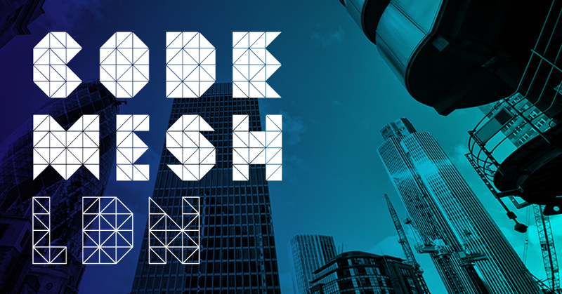

Code Mesh LDN joins Code Sync family of conferences.
As from 2018, Code Mesh LDN joins a family of tech conferences called Code Sync and will continue promoting non-mainstream technologies globally.
Tickets for 2018 are on sale here.
The Code Mesh LDN talk line-up can be viewed here.
Tutorials can be viewed here.
Matt Might
Keynote: Winning the War on Error: Solving the Halting Problem and Curing CancerInaugural Director of the Hugh Kaul Personalized Medicine Institute

David Turner

Designer of SASL, KRC and Miranda
Peter Van Roy
Building Robust Systems with Weakly Interacting Feedback StructuresProfessor at UCL and Coordinator of LightKone
Peer Stritzinger

Founding Owner and Managing Director of Peer Stritzinger GmbH


David Nolen
A Practical Functional Relational Architecture: Building Systems with DatomicSoftware Engineer
Sophia Drossopoulou
Pony for Safe, Fast, Concurrent ProgramsPony: actors, types, safety, speed - Professor Imperial College London

Radu Popescu

CVMFS Developer, Fellow @ CERN
Benjamin Samuel Koren
Developing the Sound Diffusive Acoustic Panels of the Elbphilharmonie Concert Hall HamburgComputational Geometry & Digital Fabrication in Art & Architecture
Susanna Wong
From Code to Construction: How to Utilize Scripting to Design Optimized Architectural DesignsGenerating Facade & Architectural Designs with Scripting & Mathematics
Anne Currie
Distributed systems: What can go wrong will go wrongChief Strategist, Container Solutions
Nathan Herald

Building Internet Enabled Products
Stian Veum Møllersen
Revisiting Concatenative Languages with Creative ProgrammingWeb Developer & Stack Wrangler


David Christiansen

Postdoc at IU Bloomington

William E. Byrd
Relational Interpreters, Program Synthesis, and Barliman: Strange, Beautiful, and Possibly UsefulRelational programming and program synthesis
Andrew Stone

Distributed Systems Connoisseur @ VMware

Robert Virding

Co-Inventor of Erlang
November 7, 2017
Tap on hour to see the talks
12:30 - 13:30
Lunch
13:30 - 17:00 - Room 1
Workshop: OTP, the Middleware for Concurrent Distributed Scalable Architectures
November 8, 2017
Tap on hour to see the talks
08:00 - 09:00
Registration
09:00 - 09:10 - Room 1
Welcome to Code Mesh
10:10 - 10:30
Tea and Coffee Break
11:20 - 12:05 - Room 3
Some Were meant for C: Reflections on the Endurance of an Unmanageable Language
12:05 - 13:35
Lunch
15:10 - 15:30
Tea and Coffee Break
18:00 - 20:00
Conference Party
November 9, 2017
Tap on hour to see the talks
08:30 - 09:00
Registration
09:00 - 09:10
Welcome to Day 2
10:10 - 10:30
Tea and Coffee Break
12:05 - 13:35
Lunch
13:35 - 14:20 - Room 1
Relational Interpreters, Program Synthesis, and Barliman: Strange, Beautiful, and Possibly Useful
13:35 - 14:20 - Room 2
Improving the Write Scalability of the CernVM File System with Erlang/OTP
15:10 - 15:30
Tea and Coffee Break
15:30 - 16:15 - Room 2
Revisiting Concatenative Languages with Creative Programming
15:30 - 16:15 - Room 1
Building Robust Systems with Weakly Interacting Feedback Structures
17:20 - 17:30
Closing Remarks
17:30 - 18:30
Leaving Drinks

Venues
Conference (8-9 Nov): ILEC Conference Centre / Ibis Earls Court
47 Lillie Road, London, SW6 1UD
Situated a few minutes walk from Earls Court and Olympia Exhibition Centre, ILEC Conference Centre is a perfect base for business travellers. Its close proximity to the shopper’s paradise of Kensington and Knightsbridge and the stylish cafes and boutique of Chelsea also makes it a great place for leisure visitors to stay. The closest tube station, located within a 3-min walk, is West Brompton, served by the District line and London Overground.
Driving
ILEC is a quarter of a mile (400m) from the A4, providing easy access to the M4, M5 and M40.
Airport transfer times
Heathrow (LHR): 21 km
Approximately 30 minutes in light traffic. You can also reach the airport directly by London Underground, on the Piccadilly line.
Gatwick (LGW): 45 Km
Approximately an hour in light traffic. It is 40 minutes by train from West Brompton station. Direct shuttle available with Easy Bus.
London City (LCY): 21 km
Approximately 45 minutes in light traffic.
Public transport: London Underground
West Brompton and Earls Court stations are both within walking distance giving easy access to all central district of London and Heathrow Airport.
Scholarship Programme
We are pleased to announce that Code Mesh is implementing another Scholarship Programme. The goal of the programme is to increase diversity of attendees and offer support to those in the tech community who would not otherwise be able to attend the conference.
Selection: A committee will review applications on individual basis. All committee members will sign a confidentiality agreement to protect the anonymity of applicants. We will do our best to meet as many applications as possible.
Award: Applicants will receive a conference registration ticket for 8-9 November.
Notification: All applicants will be notified via email with conference registration details.
Application: The 2017 scholarship application process is closed! The deadline for applications was 20 October 2017, midday BST. Thank you for all the applications and donations!
All application information will be kept confidential. Recipients will be notified on a rolling basis, no later than 27 October 2017.
All conference and event attendees are expected to adhere to our Code of Conduct.
If you have any questions, please contact info@codemesh.io.
Supporting the Scholarship program -